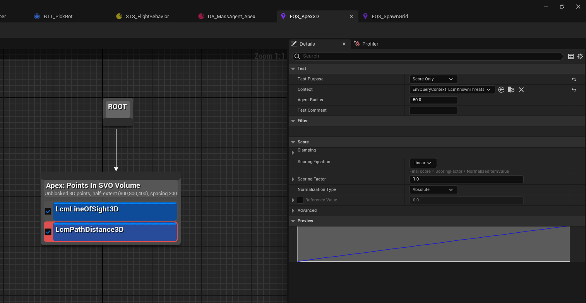

Tutorial 07 - Authoring true-3D tactical EQS
TL;DR: LCM Nav3D ships EQS generators and tests that
work in true 3D - candidate points anywhere in the
navigable volume, scored by volumetric SVO line-of-sight, cover,
threat-exposure, LCM Nav3D-path-distance and height. Author a query from
these nodes exactly like stock EQS; the only differences are the
Apex:-prefixed generators/tests and that "distance" means
LCM Nav3D path, not Euclidean or navmesh.
The LCM Nav3D EQS node catalog
Generators (UEnvQueryGenerator, produce
3D points): | Node | Produces | |---|---| | LCM Nav3D | Points
In SVO Volume | uniform 3D points in an AABB, filtered to
unblocked SVO leaves | | LCM Nav3D | Hemispherical Ring
3D | shells around a target (perch / orbit / high-ground);
Upper Hemisphere Only option | | LCM Nav3D | Points
Along Path | points sampled along the LCM Nav3D path between
two contexts | | LCM Nav3D | Portal Proximity | points
at macro-graph portal centres near a context (chokepoints) |
Tests (UEnvQueryTest, score/filter): |
Node | Axis | Notes | |---|---|---| | LCM Nav3D | Line Of Sight
3D | visible to context (bool) | volumetric SVO LOS, not 2.5D |
| LCM Nav3D | Reachability 3D | an LCM Nav3D path
exists (bool) | filter unreachable candidates | | LCM Nav3D |
Path Distance 3D | LCM Nav3D path length (float) | NOT
Euclidean; Context = Querier | | LCM Nav3D | Threat
Exposure | summed SweepPenalty toward threats (float) | lower =
safer | | LCM Nav3D | Cover Score 3D | fraction of
threats occluded-from (float) | higher = better cover | | LCM
Nav3D | Height Advantage | Z over context (float) | high ground
|
Contexts (UEnvQueryContext): | Node |
Returns | |---|---| | LCM Nav3D | Known Threats |
actors tagged ApexThreat | | LCM Nav3D | Threats
From AI Perception | the querier's perceived threats (Tutorial
08) |
Step 1 - Author a sniper-perch query
Create an EQS query EQS_FindSniperPerch:
- Generator: LCM Nav3D | Hemispherical Ring 3D -
GenerateAround= the threat context (Known Threats / Threats From AI Perception),RadiusMin/Max= your engagement band,Upper Hemisphere Only= true (perch above the threat). - Test: LCM Nav3D | Line Of Sight 3D (Context = threats) - Score, prefer should-have-LOS - a perch must see its target.
- Test: LCM Nav3D | Cover Score 3D (Context = threats) - Score↑ - partial cover is good.
- Test: LCM Nav3D | Height Advantage (Context = threats) - Score↑ - favour high ground.
- Test: LCM Nav3D | Reachability 3D (Context = Querier) - Filter - the agent must be able to get there.
The winning item is a reachable, high, in-cover position that still has line of sight to the threat - a sniper perch, chosen in full 3D.

Figure 07.1 - The anatomy of a Nav3D query. One
generator produces candidate points, then
tests score or filter them, top to bottom. Here
Apex: Points In SVO Volume is emitting unblocked 3D points
across an 800×800×400 half-extent at 200 spacing - unblocked
being the part a floor-plane generator cannot do, because it never had a
third axis to be blocked in.
The two tests are colour-coded by role in the graph: a filter removes items, a score ranks them. The Details panel on the right belongs to the selected test:
Test Purpose-Score Only,Filter Only, or both. This is the switch that decides whether a failing item is penalised or deleted.Context- what the test measures against.EnvQueryContext_LcmKnownThreatshere, so line of sight is evaluated toward the threats the agent knows about.Agent Radius- how wide the thing that has to fit is. Leave this at your real agent size; a query that scores a perch a 50 cm drone can reach tells you nothing about a 200 cm gunship.Scoring Equationand the Preview graph - the curve mapping raw measurement to score. The preview updates live, so you can see aLinearramp become aSquarebias before you ever run the query.
Step 2 - The EQS Testing Pawn
Drop an EQS Testing Pawn in the level, set its
QueryTemplate to EQS_FindSniperPerch, and
place threats so the contexts resolve. The candidate items render as
colour-graded balls; tweak generator/test parameters and watch the
scores update live.
UE's stock
EQSTestingPawnis all you need - the LCM Nav3D nodes render through it normally.
Step 3 - Wire the result into a Behavior Tree
- A
Run EQS Querytask/service runsEQS_FindSniperPerchand writes the best item to a blackboardVectorkey. - A
MoveTo(or the LCM Nav3DFlyToBT task) moves the agent to that key. - Re-run on an interval (service) so the perch updates as threats move.
(StateTree: run the query from a task that stores the location, then transition to your LCM Nav3D move task - see Tutorial 05.)
The five shipped example queries
Recipes you can build now from the catalog above:
| Query | Recipe |
|---|---|
EQS_FindSniperPerch |
Hemispherical Ring 3D + Cover Score 3D + LOS 3D + Height Advantage |
EQS_FindFlankingApproach |
Points In SVO Volume + Threat Exposure↓ + Path Distance 3D |
EQS_FindAmbushCorner |
Portal Proximity + LOS 3D (prefer blocked) + Reachability 3D |
Related
- Tutorial 08 - perception-driven threat sources (the auto-populated threat context).
- Tutorial 05 - StateTree integration (the move side).
ULcmTacticalQueryLibrary- the same primitives as Blueprint nodes (Is Segment LOS Clear,Find Best Cover,Find Apex Path Sync, ...).